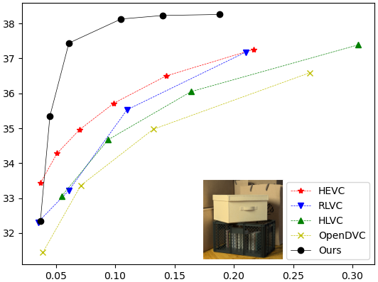
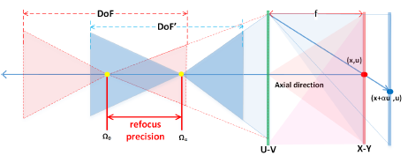
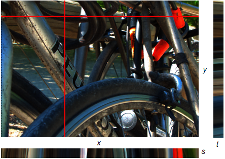
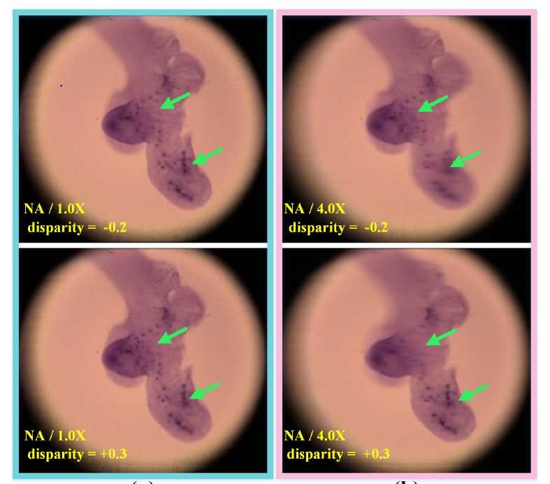

Jinglei Shi
I am a post-doctoral research fellow at French Institute for Research in Computer Science and Automation (INRIA), France, where I work on deep learning, computational photography, and 3D vision, etc. Before that, I received my PhD degree in Computer Science at INRIA, under the supervision of Prof. Christine Guillemot and Dr. Xiaoran Jiang. I got my Bachelor's degree in Electronic Information Engineering from UESTC and Master's degree & Engineer's degree in Image Processing from IMT Atlantique .
Email / Google Scholar / LinkedIn / CV
News
Research
I'm interested in devleoping efficient and effective algorithms for various light field-related applications, ranging from depth estimation, 3D reconstruction, temporal frame interpolation and compression.
|  | Distilled Low Rank Neural Radiance Field with Quantization for Light Field Compression Jinglei Shi, Christine Guillemot submitted to Signal Processing: Image Communication (SPIC 2022). |
|  | Axial Refocusing Precision Model with Light Fields Zhaolin Xiao, Jinglei Shi, Xiaoran Jiang, Christine Guillemot In Signal Processing: Image Communication (SPIC 2021). |
|  | Untrained Neural Network Prior for Compact Light Field Representation and Compression Xiaoran Jiang, Jinglei Shi, Christine Guillemot submitted to IEEE Transactions on Image Processing (TIP 2021). |

|
Deep Residual Architecture using Pixel and Feature Cues for View Synthesis and Temporal Interpolation Jinglei Shi, Xiaoran Jiang, Christine Guillemot In IEEE Transactions on Computational Imaging (TCI 2022). [Website] |

|
Deep Video Frame Rate Up-Conversion Network using Feature-Based Progressive Residue Refinement Jinglei Shi, Xiaoran Jiang, Christine Guillemot In International Conference on Computer Vision Theory and Applications (VISAPP 2022 (Oral)). [Paper] [Video] [Website] |
|  | Axial Light Field Resolution Enhancement using a Learning-Based View Extrapolation Method Zhaolin Xiao, Jinglei Shi, Xiaoran Jiang, Christine Guillemot In Neurocomputing (NC 2021). [Paper] |

|
Learning Fused Pixel and Feature-Based View Reconstructions for Light Fields Jinglei Shi, Xiaoran Jiang, Christine Guillemot In IEEE Conference on Computer Vision and Pattern Recognition (CVPR 2020 (Oral)). [Paper] [Video] [Github] |

|
A Framework for Learning Depth From a Flexible Subset of Dense and Sparse Light Field Views Jinglei Shi, Xiaoran Jiang, Christine Guillemot In IEEE Transactions on Image Processing (TIP 2019). [Paper] [Website] |

|
A Learning Based Depth Estimation Framework for 4D Densely and Sparsely Sampled Light Fields Xiaoran Jiang, Jinglei Shi, Christine Guillemot In IEEE International Conference on Acoustics, Speech, and Signal Processing (ICASSP 2019). [Paper] [Website] [Poster] |